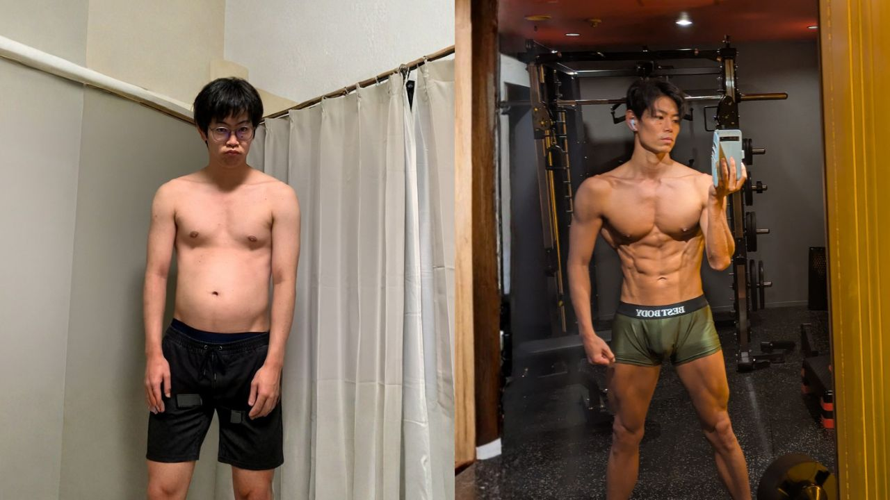
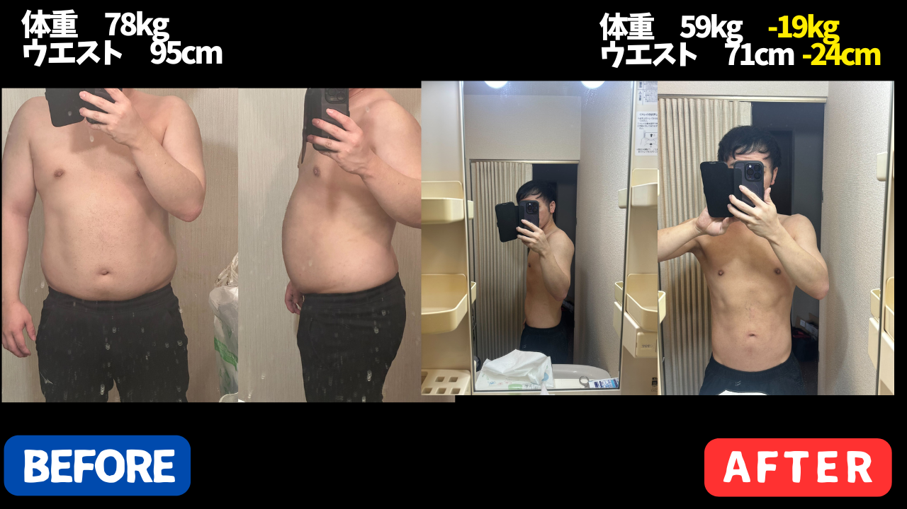
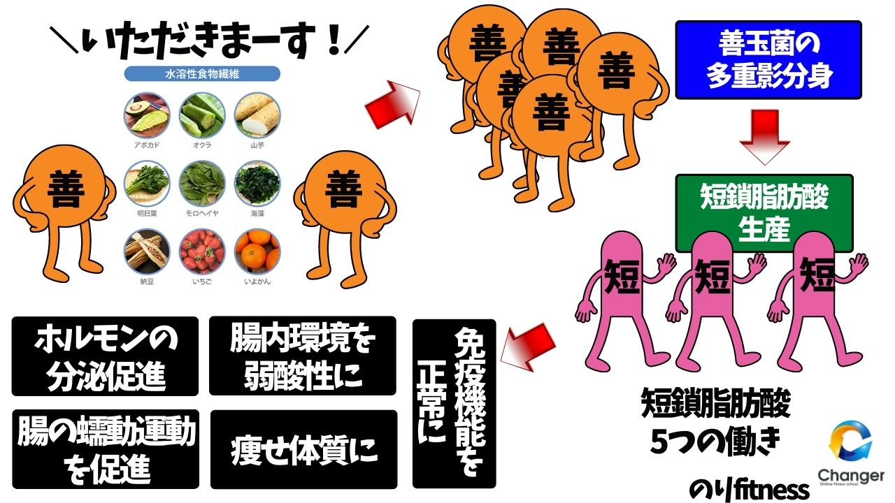
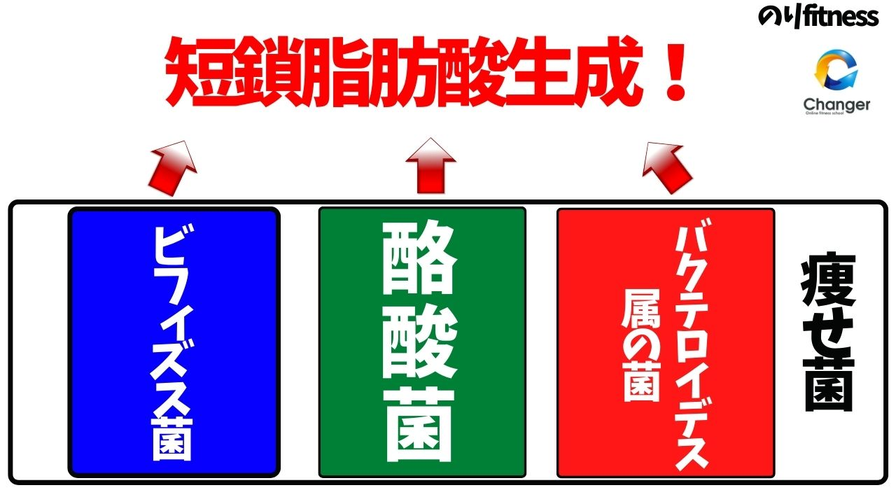
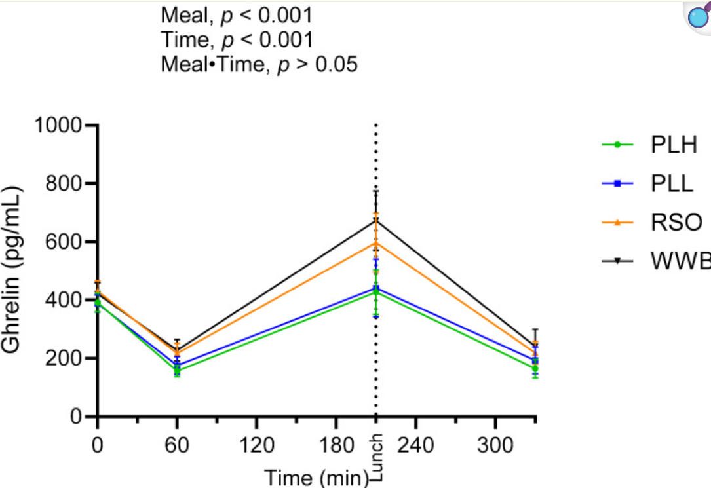
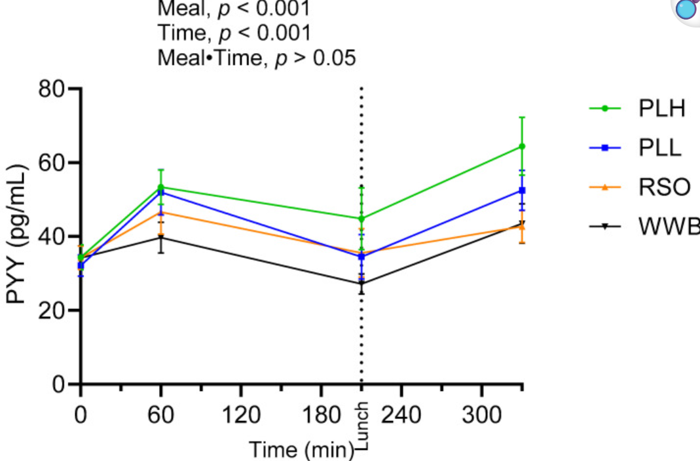
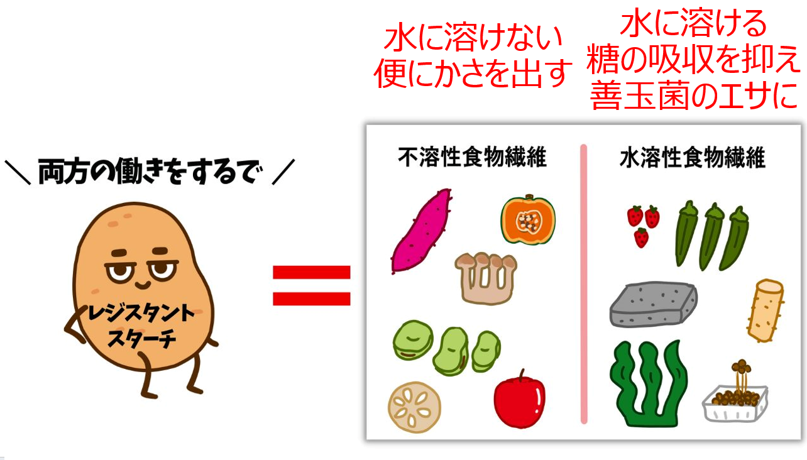
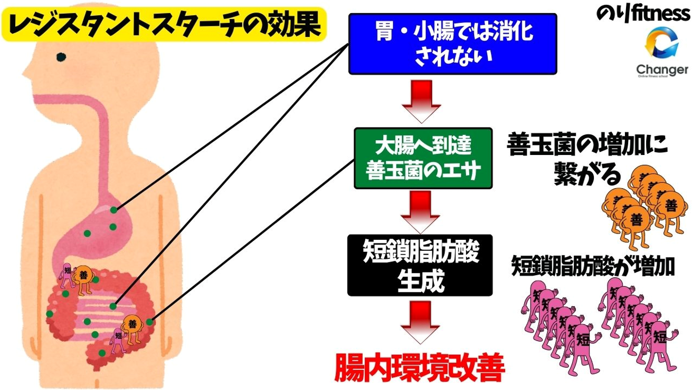

リンゴ酢は "ただ飲むだけ" では、本来の力の半分しか発揮できません。
正しい食材と合わせると、脂肪燃焼・食欲抑制・腸内環境のすべてが同時に動きます。
"リンゴ酢の使い方" を1ページに凝縮。
実体験と科学的根拠から導き出された "本物" の組み合わせ。


リンゴ酢に多く含まれる 「酢酸」 は、短鎖脂肪酸の一種です。本来は腸内の善玉菌が食物繊維を発酵させて作るものですが、リンゴ酢ならそれを 外から直接摂取できる のが最大のポイント。

- 大さじ1 を炭酸水 200〜300ml で割る
- タイミングは 食後 がベスト（血糖値の急上昇を抑える）
- 甘みが欲しい人は、最初だけ少量のはちみつでOK
- 夜の場合、睡眠の質も整える
・酸性が強いので、飲んだ 直後の歯磨きはNG（水で軽くゆすぐ）
・胃が弱い人は無理せず、徐々に慣らす
- 胃で膨らむ食物繊維で物理的に満腹感
- βグルカンが善玉菌のエサ → 短鎖脂肪酸生成
- 腸肝相関：腸内環境が整うと肝臓の脂肪蓄積も減る
- ビタミンDで 基礎代謝 もキープ

キクラゲは腸内で短鎖脂肪酸を "作る"、リンゴ酢は "外から入れる"。さらに肝臓も守る。この トリプル作用 で脂肪燃焼スイッチが入ります。
1日 乾燥5g（戻して35g程度） をスープや炒め物に。2週間続けると "腸が変わる" 実感が出ます。
- 蒸しキクラゲ 50g（乾燥なら5g）
- きゅうり 1本
- リンゴ酢 大さじ1
- 醤油 大さじ1
- ごま油 小さじ1
- ラカント or 砂糖 少々
- 白ごま 適量
- きゅうりは細切り。塩少々で揉んで水気を絞る
- 蒸しキクラゲを食べやすい大きさに切る
- リンゴ酢・醤油・ごま油・ラカントをボウルで合わせる
- すべて和えて、白ごまをふって完成
リンゴ酢の酢酸とキクラゲのβ-グルカンで短鎖脂肪酸を内外から同時にブースト。冷蔵で2〜3日持つので作り置きOK。
- 蒸しキクラゲ 40g
- 卵 2個
- 水 400ml
- 鶏ガラスープの素 小さじ2
- 醤油 小さじ1
- リンゴ酢 小さじ2（仕上げに）
- ごま油 数滴
- 小ねぎ・塩こしょう 適量
- 鍋に水と鶏ガラスープの素を入れて煮立てる
- 蒸しキクラゲを加え、1分煮る
- 醤油・塩こしょうで味を調える
- 火を弱め、溶き卵を細く回し入れる
- 火を止めてリンゴ酢を加える
- 器に盛り、ごま油・小ねぎを散らす
リンゴ酢は加熱で酢酸が飛ぶので必ず仕上げに。朝の1杯にすると、その日の食欲がスッキリ安定。
- 鶏むね肉 200g
- 蒸しキクラゲ 50g
- 玉ねぎ 1/4個
- 酒 大さじ1
- リンゴ酢 大さじ1
- 醤油 大さじ1
- おろし生姜 小さじ1
- 小ねぎ 適量
- 鶏むね肉はそぎ切り、酒で5分マリネ
- 玉ねぎは薄切り、キクラゲは食べやすい大きさに切る
- 耐熱皿に玉ねぎ→鶏むね→キクラゲの順に重ねる
- リンゴ酢・醤油・生姜を混ぜて回しかける
- ふんわりラップして電子レンジ500Wで6分（または蒸し器で10分）
- 小ねぎを散らして完成
リンゴ酢にはたんぱく質を柔らかくする働きがあり、パサつきがちな鶏むねが驚くほどしっとり。冷めても固くなりにくく、作り置きにも◎。
- 豚もも肉 150g
- 蒸しキクラゲ 60g
- 玉ねぎ 1/4個
- ピーマン 2個
- にんにく 1片
- リンゴ酢 大さじ2
- 醤油 大さじ1.5
- みりん 大さじ1
- おろし生姜 小さじ1
- ごま油 小さじ1
- 豚もも肉は一口大、玉ねぎ・ピーマンは細切り、にんにくはみじん切り
- フライパンにごま油・にんにく・生姜を入れ、中火で香りを出す
- 豚もも肉を入れ、色が変わるまで炒める
- 玉ねぎ・ピーマン・キクラゲを加えて炒める
- リンゴ酢・醤油・みりんを加え、強火で1〜2分煮絡める
"スタミナ" と聞くと豚バラを使いがちですが、豚ももなら脂質を大幅カットしながら満足度キープ。ピーマンを増やすと、ボリュームUPで200kcal台を維持できます。
- 豚もも肉 150g
- 蒸しキクラゲ 50g
- キムチ 80g
- もやし 1袋（200g）
- リンゴ酢 大さじ1
- 醤油 大さじ1
- コチュジャン 小さじ1
- ごま油 小さじ1
- 小ねぎ・白ごま 適量
- 豚もも肉は一口大に切る
- フライパンにごま油を熱し、豚もも肉を炒める
- 色が変わったらキムチを加えて炒める
- もやし・キクラゲを加え、強火で1〜2分
- リンゴ酢・醤油・コチュジャンを加えて絡める
- 小ねぎ・白ごまを散らして完成
豚バラじゃなく豚もも＋もやしでかさ増しすれば、ボリュームたっぷりでも230kcal前後。キムチの乳酸菌とキクラゲ食物繊維で、腸内の善玉菌のエサが豊富に。
- 鶏むね肉 200g
- 蒸しキクラゲ 50g
- パプリカ（赤・黄） 各1/2個
- 玉ねぎ 1/4個
- 片栗粉 大さじ1
- リンゴ酢 大さじ2
- 醤油 大さじ1
- ラカント or 砂糖 大さじ1
- ケチャップ 大さじ1
- ごま油 小さじ1
- 鶏むね肉は一口大に切り、片栗粉をまぶす
- パプリカ・玉ねぎは一口大、キクラゲも食べやすい大きさに
- リンゴ酢・醤油・ラカント・ケチャップを合わせておく
- フライパンにごま油、鶏むね肉を入れて両面焼く
- パプリカ・玉ねぎ・キクラゲを加えて炒める
- 合わせ調味料を回し入れ、強火で1〜2分絡める
"酢豚を食べたい" 衝動を、糖質1/3・脂質1/2 で再現。ラカント使用で甘酢の罪悪感もカット。子供にも好評です。
- 水溶性食物繊維で 善玉菌のエサ になり短鎖脂肪酸を増やす
- GLP-1 / PYY ↑、空腹ホルモン グレリン ↓（2023年研究）
- 満腹感アップで間食が減る


リンゴ酢は短鎖脂肪酸を "外から"、大麦は腸内で "中で作る"。短鎖脂肪酸を内外から同時に増やせるベストペア。
白米0.5合 + 大麦0.5合 で炊くだけ。朝か夜の白米を置き換えると、炭水化物の質が一気に上がります。食後にリンゴ酢を1杯添えれば完璧。

- 胃・小腸で 消化されずに大腸まで届く
- 善玉菌のエサとなり 酪酸菌+50%（2017年メタ分析）
- 食欲抑制ホルモン レプチン↑、血糖コントロール改善

血糖値の安定（リンゴ酢）＋糖の吸収をゆるやかに＋腸内発酵（レジスタントスターチ）。3つの作用が同時 に走ります。
冷やしたじゃがいも・さつまいも・青めのバナナ がベスト。
おすすめは "冷やしポテト"：マヨを減らしてリンゴ酢＋マスタードで味付けすると、脂質オフ＆腸活メニューに。
- 血糖値の上昇を抑える
- 善玉菌のエサ → 短鎖脂肪酸 大量生成
- 食欲抑制ホルモン分泌で 自然と食欲ダウン
60人を対象に 1日10g × 24週間 摂取したところ、内臓脂肪・体重・肝臓脂肪 まで減少（2019年）。
炭酸水 + リンゴ酢 + イヌリンで "最強の腸活ドリンク"。血糖安定・腸内環境・食欲ホルモンの3点が同時に動きます。
- STEP 1：水に5g溶かして食前に飲む
- STEP 2：腸が弱い人は2g程度から徐々に
- STEP 3：炭酸水＋リンゴ酢＋イヌリンに発展
- オレイン酸が食欲を安定させ、血中コレステロールも改善
- 1/2個（約68g）で 満腹感+30%・グレリン↓（2019年）
- 脂質を制限しすぎると逆に 加工品を選びやすくなる（2023年RCT）
満腹感（アボカド）＋血糖値急上昇抑制（リンゴ酢）＋食欲ホルモン安定（両方）。「食べても太りにくい状態」 を作れます。
1日 1/2〜1個。サラダ、納豆＋アボカド＋醤油でご飯、オリーブオイル＋塩などシンプルが◎。
のり氏は 醤油＋わさび で食べるのが定番。
- 梅：クエン酸で疲労回復・代謝維持、抗酸化・抗糖尿病作用も
- 炭酸水：普通の水より 満腹感UP（2012年）
- リンゴ酢：血糖値と食欲をコントロール
- 炭酸水 300ml
- リンゴ酢 大さじ1
- 梅干し 1粒（または無糖の梅エキス）
- お好みでレモン果汁少量
・飲んだ後は 水で軽くゆすぐ（歯磨きは時間を置く）
リンゴ酢は 飲むだけで脂肪が消える魔法 ではありません。
ただ、毎日少しでも 空腹感が減るだけでストレスが減り、結果的に摂取カロリーが整います。
- 準備がほぼいらない：食後に1杯足すだけ
- 習慣化しやすい：朝食 or 夕食のセットメニューに固定
- 小さく積み上げる：1つでもできた日を肯定して継続
- キクラゲ：腸 × 肝臓を同時に整える
- 大麦：水溶性食物繊維で食欲ホルモンを安定
- レジスタントスターチ：冷やすだけで増える腸活食材
- イヌリン：食前ちょい足しで満腹感UP
- アボカド：良質な脂質で食欲を安定
- 梅干し炭酸水：食欲抑制＋疲労回復のドリンク
意志に頼らず "仕組み" で痩せる。これが、リバウンドしない最短ルートです。